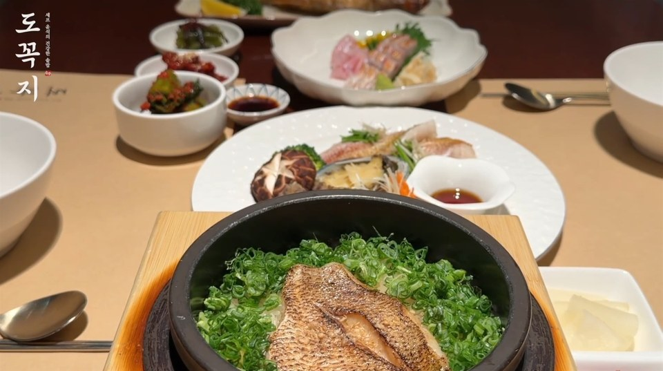
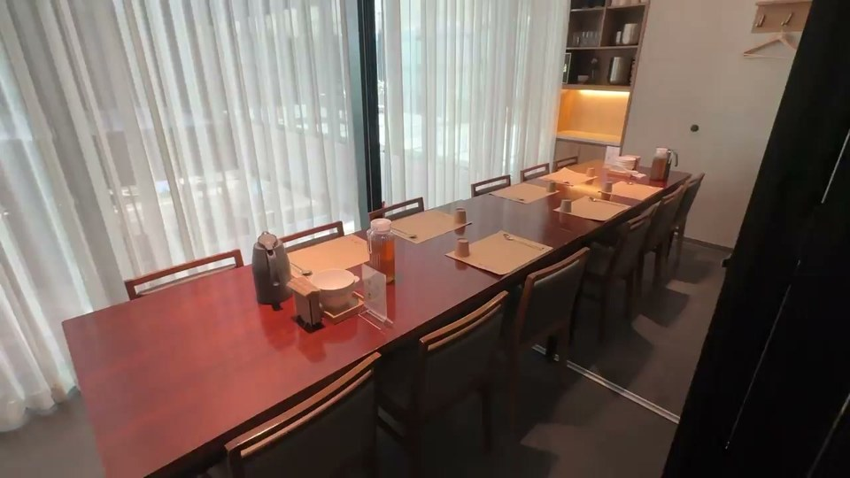

잠실 가족식사 · 룸 안내
도꼭지 잠실점,
가족식사와 룸 안내.
부모님과 함께할 식사, 가족이 모이는 한 끼를 준비하시나요? 도꼭지는 서울 송파구 잠실로 209, KT송파타워 2층의 솥밥·생선구이 한식당입니다. 지도와 예약 서비스에서는 ‘도꼭지 KT송파타워점’으로도 확인할 수 있습니다. 도미·전복솥밥과 생선구이 메뉴를 살펴보고, 방문 인원에 맞춰 홀 또는 룸을 선택해 주세요.
잠실역 10번 출구 인근, 송파구청 옆
KT송파타워(소피텔 건물) 2층에 있습니다.

함께 앉을 자리
2인부터 12인까지, 인원에 맞춰

2–6인: 룸 1개
룸 1개는 최대 6인, 2인부터 이용할 수 있습니다. 이용료는 20,000원이며 식사 금액과 별도입니다.
7–12인: 연결 룸
룸 1번과 2번을 연결하면 최대 12인까지 가능합니다. 연결 룸 이용료는 30,000원입니다. 7–12인 모임은 전화로 이용 가능 여부를 문의해 주세요. 회식·단체 모임 안내 →
룸 이용 시간은 90분입니다. 날짜·시간·좌석별 이용 가능 여부는 예약 시 확인해 주세요.
방문 전에
위치·주차·영업시간
식사 시간
일–목 11:00–21:20 / 금·토 11:00–22:00
브레이크타임 매일 15:00–17:00
라스트오더 일–목 20:40 / 금·토 21:00
설날·추석 전날과 당일 휴무입니다. 공휴일 영업시간은 예약 시 확인해 주세요.
가족모임을 준비할 때
예약 전에 궁금한 점
잠실에서 부모님과 저녁 식사를 하려면 몇 시에 방문하면 되나요?
도꼭지의 저녁 식사는 브레이크타임이 끝나는 오후 5시부터 가능합니다. 일요일부터 목요일까지는 오후 9시 20분, 금요일과 토요일은 오후 10시까지 영업합니다. 마지막 주문은 일–목 오후 8시 40분, 금·토 오후 9시입니다. 공휴일 영업시간과 방문 날짜의 좌석은 예약 전에 확인해 주세요.
솥밥·생선구이 메뉴를 살펴보고 홀 또는 룸을 선택하실 수 있습니다. 룸은 2인부터 이용할 수 있으며 이용 시간은 90분입니다. 7–12인 연결 룸은 오전 10시부터 전화 02-422-0431로 이용 가능 여부를 문의해 주세요.
부모님과 가족식사 메뉴는 어떻게 고르면 되나요?
도미·전복 솥밥은 각각 29,000원, 도미전복솥밥은 35,000원입니다. 생선구이를 원하시면 고등어구이와 계절솥밥(29,000원) 등도 선택할 수 있습니다. 금태솥밥(43,000원)은 수량 한정이므로 주문 가능 여부를 확인해 주세요.
부모님과 6명이 함께 앉을 룸이 있나요?
도꼭지에는 개별 룸이 3개 있습니다. 룸 1개는 2인부터 최대 6인까지 이용할 수 있으며, 이용 시간은 90분입니다. 룸 1개 이용료는 식사 금액과 별도로 20,000원입니다. 방문 날짜와 시간에 이용 가능한 룸은 예약할 때 확인해 주세요.
가족이 7명 이상이면 같은 공간에서 식사할 수 있나요?
룸 1번과 2번을 연결하면 최대 12인까지 이용할 수 있습니다. 연결 룸 이용료는 30,000원이며 식사 금액과 별도입니다. 7–12인 가족모임은 매일 오전 10시부터 전화 02-422-0431로 이용 가능 여부를 문의해 주세요.
부모님과 차로 방문하려면 어디로 가면 되나요?
주소는 서울 송파구 잠실로 209, KT송파타워 2층입니다. 건물 지하 3·4층 주차장을 이용하시면 주차 2시간을 무료로 이용할 수 있습니다. 방문 전 지도에서 건물 위치와 진입 경로를 확인하고, 이 페이지의 식사 시간 안내에서 영업시간·브레이크타임·라스트오더를 확인해 주세요. 예약 방법은 예약 안내에서 확인하실 수 있습니다.
아이를 동반하거나 생일 모임을 준비한다면?
예약 전에 방문 인원과 필요한 사항을 매장에 알려 주세요. 유아의자·케이크 반입·장식 등 개별 요청은 전화 02-422-0431로 가능 여부를 먼저 확인해 주세요.
잠실에서 두 명도 룸을 이용할 수 있나요?
네. 도꼭지 잠실점(서울 송파구 잠실로 209, KT송파타워 2층)의 개별 룸 3개는 2인부터 이용할 수 있습니다. 룸 이용료는 식사 금액과 별도로 20,000원, 이용 시간은 90분입니다. 두 분이 도미솥밥 2개를 주문하시면 식사 58,000원에 룸 이용료를 더해 78,000원입니다. 2–6인 룸은 네이버 예약·캐치테이블에서 24시간 예약할 수 있습니다.
6명이 들어갈 수 있는 개별 룸이 있나요?
네. 개별 룸 3개는 각각 최대 6인까지 이용할 수 있습니다. 룸 이용료는 20,000원(식사 금액 별도), 이용 시간은 90분입니다. 솥밥은 1인 1개씩 주문하며, 도미솥밥 기준 6인 식사 174,000원에 룸 이용료를 더하면 194,000원입니다. 추가 메뉴·음료는 별도입니다.
8~12명이 함께 식사할 수 있는 한식 룸이 있나요?
룸 1번과 2번을 연결하면 최대 12인까지 한 공간에서 식사할 수 있습니다. 연결 룸 이용료는 30,000원입니다. 룸 이용료 없이 앉으시려면 홀 단체석에서 8인까지 한 자리로 붙여 앉을 수 있습니다. 7–12인 예약은 매일 오전 10시부터 전화 02-422-0431로 이용 가능 여부를 먼저 확인해 주세요.
잠실역 근처에서 가족 식사할 룸을 예약할 수 있나요?
도꼭지는 잠실역 10번 출구 인근, 송파구청 옆 KT송파타워(소피텔 건물) 2층에 있습니다. 2–6인 룸은 네이버 예약·캐치테이블에서 24시간 예약할 수 있고, 7–12인 연결 룸은 전화로 문의해 주세요. 룸 예약 마지막 접수는 19:30이며, 예약금과 선결제는 없습니다. 건물 지하 3·4층 주차장을 이용하면 2시간 무료입니다.
조용하게 대화하며 저녁을 먹을 수 있는 자리가 있나요?
대화가 중요한 자리라면 홀과 분리된 개별 룸을 예약해 주세요. 룸은 2인부터 최대 6인까지 이용할 수 있고, 이용 시간은 90분입니다. 저녁 식사는 17:00부터 가능하며 룸 예약 마지막 접수는 19:30입니다.
부모님과 가족 식사를 할 때 홀과 룸은 어떻게 고르면 되나요?
일행끼리 한 공간에서 식사하시려면 룸을, 별도 룸 이용료 없이 식사하시려면 홀을 살펴보세요. 메뉴와 예산 안내에서 도미솥밥·전복솥밥 등 각자 드실 메뉴를 미리 고르실 수 있습니다.
부모님 생신 모임은 인원에 따라 어떤 자리를 살펴보면 되나요?
2–6명이면 개별 룸, 7–12명이면 연결 룸을 살펴보세요. 날짜와 인원을 정하신 뒤 그 시간에 이용 가능한 자리를 확인해 주세요.
상견례 식사를 준비할 때 룸과 메뉴는 어떻게 확인하나요?
룸에서 식사하실 경우 이용 시간은 90분이며 룸 이용료는 식사 금액과 별도입니다. 참석 인원에 맞는 룸을 살펴보신 뒤, 솥밥·생선구이 메뉴와 예산을 확인해 주세요.
평일 저녁 회식은 홀과 룸 중 어떤 자리를 고르면 되나요?
8명까지는 홀 단체석에서 한자리에 앉을 수 있습니다. 일행끼리 별도 공간을 쓰고 싶으시면 2–6인 개별 룸이나 7–12인 연결 룸의 이용 가능 여부를 확인해 주세요.
예약 방법과 문의처 보기 →가족식사 예약
날짜와 인원을 정하셨나요?
- 방문 날짜·시간·인원과 홀 또는 룸을 정해 주세요.
- 예약 서비스에서 이용 가능한 좌석과 취소 조건을 확인해 주세요.
- 예약 신청 후 해당 서비스의 확정 알림을 확인해 주세요.
온라인 예약은 24시간 가능합니다. 7–12인 연결 룸 또는 자세한 문의는 매일 오전 10시부터 전화로 안내합니다.
멤버십
다시 찾는 즐거움, 도꼭지 멤버스
따뜻한 한 끼와 함께, 소중한 날도 기억하겠습니다.
매장에서 회원가입
매장 방문 시 QR을 열고 휴대폰 번호를 입력해 주세요. 기존 회원은 체크인, 처음 방문하신 분은 가입으로 안내됩니다.
회원정보 입력
성함과 생일을 입력하고 가입 안내를 확인해 주세요. 광고성 정보 수신동의는 선택입니다.
마지막으로 카카오톡 채널 추가
생일 혜택 안내를 받으시려면 도꼭지 카카오톡 채널을 꼭 추가해 주세요.
가입만으로 생일 초대권이 즉시 발급되지는 않습니다. 혜택 대상과 제공 시점은 매장에서 확인해 주세요.
가입 화면은 한국어로 제공됩니다. 휴대폰 번호 입력이 어려우시면 직원에게 문의해 주세요.